11. Spark Core¶
11.1. RDD¶
弹性分布式数据集（Resilient Distributed Datasets，RDD），是Spark中最基本的数据抽象，代表一个不可变、可分区的，元素可并行计算的集合
A Resilient Distributed Dataset (RDD), the basic abstraction in Spark. Represents an immutable,partitioned collection of elements that can be operated on in parallel
来源于Paper：Resilient Distributed Datasets: A Fault-Tolerant Abstraction for In-Memory Cluster Computing
RDD提供了一个抽象的数据模型，不必担心底层数据的分布式特性，只需将具体的应用逻辑表 达为一系列转换操作（函数），不同RDD之间的转换操作之间还可以形成依赖关系，进而实现管道化，从而避免了中间结果的存储，大大降低了数据复制、磁盘IO和序列化开销，并且还提供了更多的API(map/reduec/filter/groupBy等等)
RDD核心点
不可变immutable
分区的partitioned
并行计算的parallel
11.1.1. 特性¶
Internally, each RDD is characterized by five main properties:
- A list of partitions
- A function for computing each split
- A list of dependencies on other RDDs
- Optionally, a Partitioner for key-value RDDs (e.g. to say that the RDD is hash-partitioned)
- Optionally, a list of preferred locations to compute each split on (e.g. block locations for
an HDFS file)
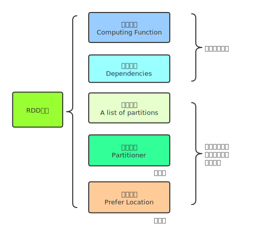
RDD数据结构内部有五个特性
A list of partitions
一个分区（分片）列表，即数据集的基本组成单位
对于RDD来说，每个分片会被一个计算任务处理，分片决定并行度
用户可以在创建RDD的时候指定RDD分片数，没有指定则会采用默认值
/** * Implemented by subclasses to return the set of partitions in this RDD. This method will only * be called once, so it is safe to implement a time-consuming computation in it. * * The partitions in this array must satisfy the following property: * `rdd.partitions.zipWithIndex.forall { case (partition, index) => partition.index == index }` */ protected def getPartitions: Array[Partition]
A function for computing each split
Spark中的RDD计算是以分片为单位的，compute函数会被作用在每个分区上
/** * :: DeveloperApi :: * Implemented by subclasses to compute a given partition. */ @DeveloperApi def compute(split: Partition, context: TaskContext): Iterator[T]
A list of dependencies on other RDDs
RDD的每次转换都会生成一个新的RDD，故RDD之间就会形成类似流水线一样的前后依赖关系，在部分数据丢失时，就可以通过依赖关系重新计算丢失的分区数据，而不是对RDD所有的分区进行重新计算（容错机制）
Seq有序，也就体现了RDD的前后依赖
/** * Implemented by subclasses to return how this RDD depends on parent RDDs. This method will only * be called once, so it is safe to implement a time-consuming computation in it. */ protected def getDependencies: Seq[Dependency[_]] = deps
Optionally, a Partitioner for key-value RDDs (e.g. to say that the RDD is hash-partitioned)
可选项，对于KeyValue类型的RDD会有一个Partitioner，即RDD的分区函数
当前Spark中实现了两种类型的分区函数，一个是基于哈希的HashPartitioner，另外一个是基于范围的RangePartitioner。
只有对于key-value的RDD，才有Partitioner，非key-value的RDD，Parititioner值是None
Partitioner函数不但决定了RDD本身的分片数量，也决定了parent RDD Shuffle输出时的分片数量
Optionally, a list of preferred locations to compute each split on (e.g. block locations for an HDFS file)
可选项，一个列表，存储存取每个Partition的优先位置（prefer location）
对于一个HDFS文件来说，这个列表保存的就是每个Partition所在的块的位置
按照”移动数据不如移动计算”的理念，Spark在进行任务调度的时候，会尽可能选择那些存有数据的worker节点来进行任务计算。（本地优先计算）
RDD设计的一个重要优势是能够记录RDD间的依赖关系，也就是血统（lineage），通过丰富的转换操作（Transformation），可以构建一个复杂的DAG有向无环图，进而一步步计算
11.1.2. 函数¶
主要有两类：Transformation和Action
Transformation操作只是建立计算关系，而Action 操作才是实际的执行者
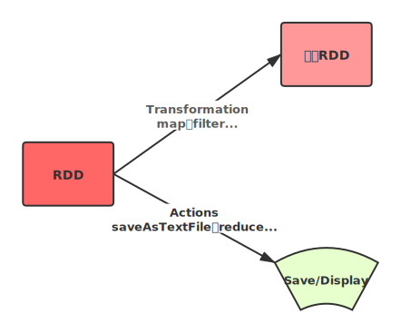
Transformation
返回一个新的RDD
which create a new dataset from an existing one
所有Transformation函数都是
Lazy，不会立即执行，需要Action函数触发
Action
返回值不是RDD（无返回值或者返回其他返回值）
which return a value to the driver program after running a computation on the dataset
所有Action函数立即执行（Eager），比如count、first、collect、take等
注意：
RDD不实际存储真正要计算的数据，而是记录了数据的位置在哪，数据的转换关系
RDD中的所有转换都是惰性求值/延迟执行的，也就是说并不会直接计算。只有当发生一个要求返回结果给Driver的Action动作时，这些转换才会真正运行。之所以使用惰性求值/延迟执行，是因为这样可以在Action时对RDD操作形成DAG有向无环图进行Stage的划分和并行优化，这种设计让Spark更加有效率地运行
11.1.2.1. 一些重要函数¶
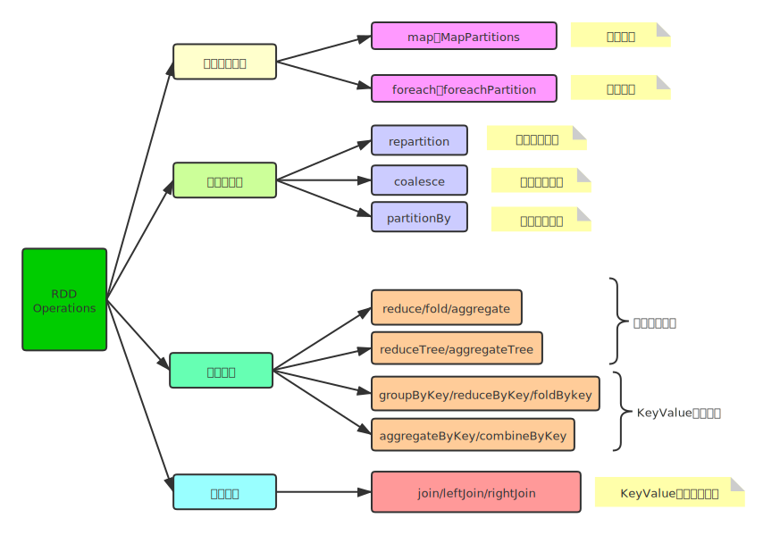
11.2. 持久化¶
在实际开发中某些RDD的计算或转换可能会比较耗费时间，如果这些RDD后续还会频繁的被使用到，那么可以将这些RDD进行持久化/缓存，这样下次再使用到的时候就不用再重新计算了，提高了程序运行的效率。
11.2.1. 缓存函数¶
/**
* Persist this RDD with the default storage level (`MEMORY_ONLY`).
*/
def persist(): this.type = persist(StorageLevel.MEMORY_ONLY)
/**
* Persist this RDD with the default storage level (`MEMORY_ONLY`).
*/
def cache(): this.type = persist()
11.2.2. 缓存级别¶
//缓存数据：选择缓存级别
val NONE = new StorageLevel(false, false, false, false)
val DISK_ONLY = new StorageLevel(true, false, false, false)
val DISK_ONLY_2 = new StorageLevel(true, false, false, false, 2)
val MEMORY_ONLY = new StorageLevel(false, true, false, true)
val MEMORY_ONLY_2 = new StorageLevel(false, true, false, true, 2)
val MEMORY_ONLY_SER = new StorageLevel(false, true, false, false)
val MEMORY_ONLY_SER_2 = new StorageLevel(false, true, false, false, 2)
val MEMORY_AND_DISK = new StorageLevel(true, true, false, true)
val MEMORY_AND_DISK_2 = new StorageLevel(true, true, false, true, 2)
val MEMORY_AND_DISK_SER = new StorageLevel(true, true, false, false)
val MEMORY_AND_DISK_SER_2 = new StorageLevel(true, true, false, false, 2)
val OFF_HEAP = new StorageLevel(true, true, true, false, 1)
11.2.3. 释放缓存¶
当缓存的RDD数据，不再被使用时，考虑释资源，使用如下函数：
/**
* Mark the RDD as non-persistent, and remove all blocks for it from memory and disk.
*
* @param blocking Whether to block until all blocks are deleted.
* @return This RDD.
*/
def unpersist(blocking: Boolean = true): this.type = {
logInfo("Removing RDD " + id + " from persistence list")
sc.unpersistRDD(id, blocking)
storageLevel = StorageLevel.NONE
this
}
11.2.4. 什么时候需要缓存数据？¶
当某个RDD被使用多次的时候，建议缓存此RDD数据
当某个RDD来之不易，并且使用不止一次，建议缓存此RDD数据
11.3. Checkpoint¶
RDD 数据可以持久化，但是持久化/缓存可以把数据放在内存中，虽然是快速的，但是也是最 不可靠的；也可以把数据放在磁盘上，也不是完全可靠的！例如磁盘会损坏等。
Checkpoint的产生就是为了更加可靠的数据持久化，在Checkpoint的时候一般把数据放在在 HDFS上，这就天然的借助了HDFS天生的高容错、高可靠来实现数据最大程度上的安全，实现了RDD 的容错和高可用。
在Spark Core中对RDD做checkpoint，可以切断做checkpoint RDD的依赖关系，将RDD数据 保存到可靠存储（如HDFS）以便数据恢复
持久化和Checkpoint的区别
存储位置不同
Persist 和 Cache 只能保存在本地的磁盘和内存中(或者堆外内存)；
Checkpoint 可以保存数据到 HDFS 这类可靠的存储上；
生命周期
Cache和Persist的RDD会在程序结束后会被清除或者手动调用unpersist方法；
Checkpoint的RDD在程序结束后依然存在，不会被删除
Lineage(血统、依赖链、依赖关系)
Persist和Cache，不会丢掉RDD间的依赖链/依赖关系，因为这种缓存是不可靠的，如果出现了一些错误(例如 Executor 宕机)，需要通过回溯依赖链重新计算出来
Checkpoint会斩断依赖链，因为Checkpoint会把结果保存在HDFS这类存储中，更加的安 全可靠，一般不需要回溯依赖链
11.4. 共享变量¶
在默认情况下，当Spark在集群的多个不同节点的多个任务上并行运行一个函数时，它会把函数中涉及到的每个变量，在每个任务上都生成一个副本。但是，有时候需要在多个任务之间共享变量，或者在任务(Task)和任务控制节点(Driver Program)之间共享变量。
Spark提供了两种类型的变量：
广播变量Broadcast Variables
广播变量用来把变量在所有节点的内存之间进行共享，在每个机器上缓存一个只读的变 量，而不是为机器上的每个任务都生成一个副本
累加器Accumulators
累加器支持在所有不同节点之间进行累加计算(比如计数或者求和)
11.4.1. 广播变量¶
广播变量允许开发人员在每个节点（Worker or Executor）缓存只读变量，而不是在Task之间传递这些变量。使用广播变量能够高效地在集群每个节点创建大数据集的副本。同时Spark还使用高效的广播算法分发这些变量，从而减少通信的开销。
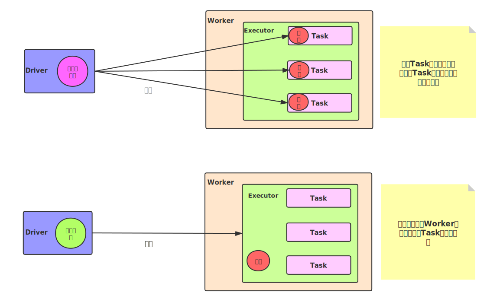
11.4.2. 累加器¶
Spark提供的Accumulator，主要用于多个节点对一个变量进行共享性的操作。Accumulator只提供了累加的功能，即确提供了多个task对一个变量并行操作的功能。但是task只能对Accumulator进行累加操作，不能读取Accumulator的值，只有Driver程序可以读取Accumulator的值。创建的Accumulator变量的值能够在Spark Web UI上看到，在创建时应该尽量为其命名。
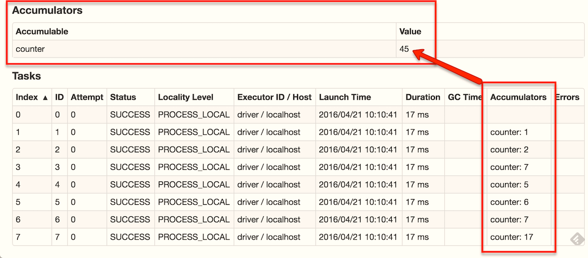
Spark内置了三种类型的Accumulator，分别是LongAccumulator用来累加整数型，DoubleAccumulator用来累加浮点型，CollectionAccumulator用来累加集合元素。
11.5. Spark内核调度¶
Spark的核心是根据RDD来实现的，Spark Scheduler则为Spark核心实现的重要一环，其作用就是任务调度。Spark的任务调度就是如何组织任务去处理RDD中每个分区的数据，根据RDD的依赖关系构建DAG，基于DAG划分Stage，将每个Stage中的任务发到指定节点运行。基于Spark的任务调度原理，可以合理规划资源利用，做到尽可能用最少的资源高效地完成任务计算。
以词频统计WordCount程序为例，Job执行是DAG图：
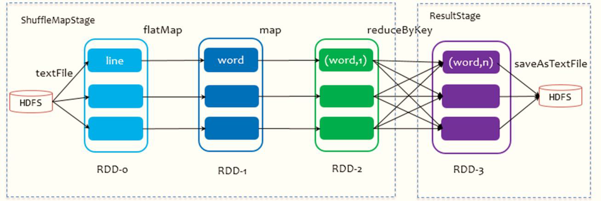
11.5.1. RDD依赖¶
RDD 的容错机制是通过将 RDD 间转移操作构建成有向无环图来实现的。从抽象的角度看，RDD 间存在着血统继承关系，其本质上是 RDD之间的依赖（Dependency）关系。 从图的角度看，RDD 为节点，在一次转换操作中，创建得到的新 RDD 称为子 RDD，同时会产生新的边，即依赖关系，子 RDD 依赖向上依赖的 RDD 便是父 RDD，可能会存在多个父 RDD。
可以将这种依赖关系进一步分为两类，分别是窄依赖（NarrowDependency）和 Shuffle 依赖（Shuffle Dependency 在部分文献中也被称为 Wide Dependency，即宽依赖）。
11.5.1.1. 窄依赖¶
父 RDD 与子 RDD 间的分区是一对一的
11.5.1.2. 宽依赖¶
父 RDD 中的分区可能会被多个子 RDD 分区使用
因为父 RDD 中一个分区内的数据会被分割并发送给子 RDD 的所有分区，因此 Shuffle 依赖也意味着父 RDD与子 RDD 之间存在着 Shuffle 过程。
11.5.1.3. 为什么要设计宽窄依赖？¶
对于窄依赖来说：Spark可以并行计算；如果有一个分区数据丢失，只需要从父RDD的对应 个分区重新计算即可，不需要重新计算整个任务，提高容错
对应宽依赖来说：划分Stage的依据，产生Shuffle
11.5.2. Stage和DAG¶
DAG
如果一个有向图无法从任意顶点出发经过若干条边回到该点，则这个图是一个有向无环图（DAG图）。而在Spark中，由于计算过程很多时候会有先后顺序，受制于某些任务必须比另一些任务较早执行的限制，必须对任务进行排队，形成一个队列的任务集合，这个队列的任务集合就是DAG图，每一个定点就是一个任务，每一条边代表一种限制约束（Spark中的依赖关系）
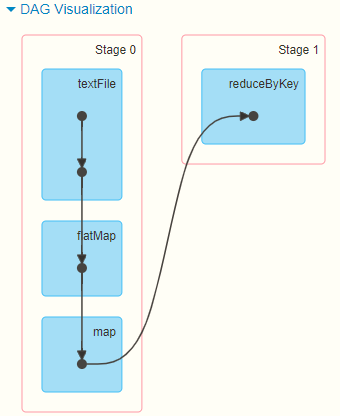
从上图可以看出，Stage0和Stage1被一条S形线相连，S形线代表产生了Shuffle
Spark中DAG生成过程的重点是对Stage的划分，其划分的依据是RDD的依赖关系，对于不同 的依赖关系，高层调度器会进行不同的处理。
对于窄依赖，RDD之间的数据不需要进行Shuffle，多个数据处理可以在同一台机器的内存中完 成，所以窄依赖在Spark中被划分为同一个Stage
对于宽依赖，由于Shuffle的存在，必须等到父RDD的Shuffle处理完成后，才能开始接下来的计 算，所以会在此处进行Stage的切分
把DAG划分成互相依赖的多个Stage，划分依据是RDD之间的宽依赖，Stage是由一组并行的Task组成。
Stage切割规则：从后往前，遇到宽依赖就切割Stage。
Stage计算模式：pipeline管道计算模式，pipeline只是一种计算思想、模式，来一条数据然后计算一条数据，把所有的逻辑走完，然后落地。准确的说：一个task处理一串分区的数据，整个计算逻辑全部走完。
11.6. Spark Shuffle¶
Spark在DAG调度阶段会将一个Job划分为多个Stage，上游Stage做map工作，下游Stage做reduce工作，其本质上还是MapReduce计算框架。Shuffle是连接map和reduce之间的桥梁，它将map的输出对应到reduce输入中，涉及到序列化反序列化、跨节点网络IO以及磁盘读写IO等。
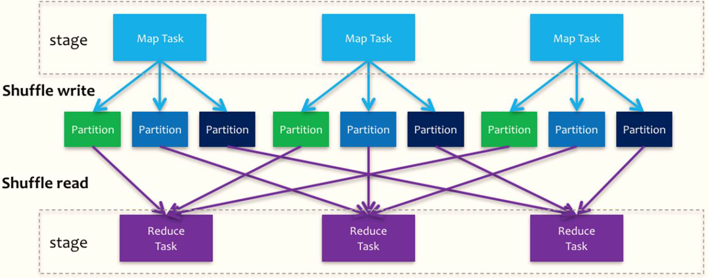
Spark的Shuffle分为Write和Read两个阶段，分属于两个不同的Stage，前者是Parent Stage的最后一步，后者是Child Stage的第一步
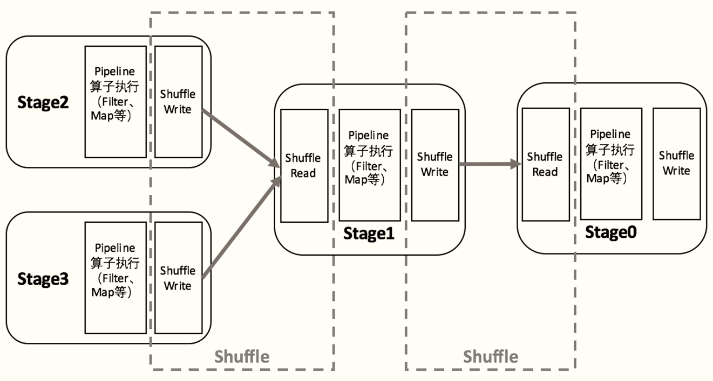
执行Shuffle的主体是Stage中的并发任务，这些任务分ShuffleMapTask和ResultTask两种，ShuffleMapTask要进行Shuffle，ResultTask负责返回计算结果，一个Job中只有最后的Stage采用ResultTask，其他的均为ShuffleMapTask。
如果要按照map端和reduce端来分析的话，ShuffleMapTask可以即是map端任务，又是reduce端任务，因为Spark中的Shuffle是可以串行的；ResultTask则只能充当reduce端任务的角色
11.7. Job调度流程¶
当启动Spark Application的时候，运行MAIN函数，首先创建SparkContext对象（构建DAGScheduler和TaskScheduler）
DAGScheduler实例对象
将每个Job的DAG图划分为Stage，依据RDD之间依赖为宽依赖（产生Shuffle）
TaskScheduler实例对象
调度每个Stage中所有Task：TaskSet，发送到Executor上执行
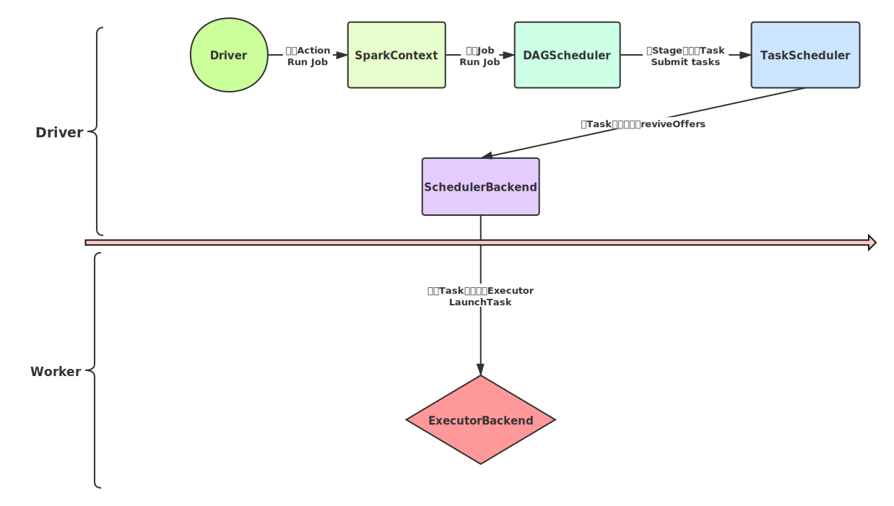
Spark RDD通过其Transactions操作，形成了RDD血缘关系图，即DAG，最后通过Action的调用，触发Job并调度执行
DAGScheduler负责Stage级的调度，主要是将DAG切分成若干Stages，并将每个Stage打包成TaskSet交给TaskScheduler调度
TaskScheduler负责Task级的调度，将DAGScheduler给过来的TaskSet按照指定的调度策略分发到Executor上执行，调度过程中SchedulerBackend负责提供可用资源，其中SchedulerBackend有多种实现，分别对接不同的资源管理系统
一个Spark应用程序包括Job、Stage及Task
Job是以Action方法为界，遇到一个Action方法则触发一个Job
Stage是Job的子集，以RDD宽依赖(即Shuffle)为界，遇到Shuffle做一次划分
Task是Stage的子集，以并行度(分区数)来衡量，分区数是多少，则有多少个task
11.8. 并行度¶
Spark作业中，各个stage的task数量，代表了Spark作业在各个阶段stage的并行度
在Spark Application运行时，并行度可以从两个方面理解：
资源的并行度：由节点数(executor)和cpu数(core)决定的
数据的并行度：task的数据，partition大小
task又分为map时的task和reduce(shuffle)时的task
task的数目和很多因素有关，资源的总core数，spark.default.parallelism参数，spark.sql.shuffle.partitions参数，读取数据源的类型,shuffle方法的第二个参数,repartition的数目等等
如果Task的数量多，能用的资源也多，那么并行度自然就好。如果Task的数据少，资源很多，有一定的浪费，但是也还好。
如果Task数目很多，但是资源少，那么会执行完一批，再执行下一批。所以官方给出的建议是，这个Task数目要是core总数的2-3倍为佳。如果core有多少Task就有多少，那么有些比较快的task执行完了，一些资源就会处于等待的状态。
11.8.1. 设置Task数量¶
将Task数量设置成与Application总CPU Core 数量相同（理想情况，150个core，分配150 Task）
官方推荐，Task数量，设置成Application总CPU Core数量的2~3倍（150个cpu core，设置task数量300~500）
与理想情况不同的是：有些Task会运行快一点，比如50s就完了，有些Task可能会慢一点，要一分半才运行完，所以如果你的Task数量，刚好设置的跟CPU Core数量相同，也可能会导致资源的浪费，比如150 Task，10个先运行完了，剩余140个还在运行，但是这个时候，就有10个CPU Core空闲出来了，导致浪费。如果设置2~3倍，那么一个Task运行完以后，另外一个Task马上补上来，尽量让CPU Core不要空闲。
11.8.2. 设置并行度¶
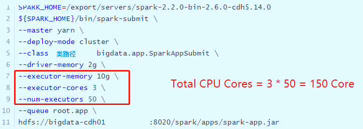
Task没有设置或者设置的很少，比如为100个task ，平均分配一下，每个executor 分配到2个task，每个executor 剩下的一个cpu core 就浪费了！
并行度没有与资源相匹配，导致你分配下去的资源都浪费掉了。**合理的并行度的设置，应该要设置的足够大，大到可以完全合理的利用你的集群资源。**可以调整Task数目，按照原则：Task数量，设置成Application总CPU Core数量的2~3倍